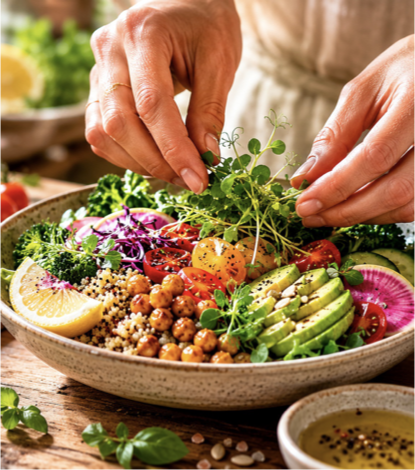

Biofeedback
Uma abordagem complementar orientada para consciência, observação e bem-estar integral.
biofeedback . alimentação natural . bem-estar integrado
Um espaço onde pessoas, animais e famílias encontram conhecimento, presença e experiências para viver com mais equilíbrio.
A essência da marca
Na Pura Tita, o cuidado é vivido com sensibilidade, clareza e proximidade. O objetivo é ajudar cada pessoa a observar, organizar e transformar o seu bem-estar com mais intenção.
Uma abordagem complementar orientada para consciência, observação e bem-estar integral.
Escolhas alimentares naturais e funcionais, ajustadas à rotina e ao contexto de cada pessoa.
Um olhar integrado sobre pessoas, animais, rotinas, vínculos e ambiente familiar.
Workshops, showcookings e propostas pensadas para marcas, empresas e comunidade.
Posicionamento
A Pura Tita não diagnostica, não trata e não substitui acompanhamento médico, nutricional ou veterinário. O trabalho é feito de forma complementar, responsável e educativa, apoiando escolhas mais conscientes e rotinas mais equilibradas.
Família multiespécie
A secção Família reúne fotografias de tutores e animais em sessão de biofeedback, reforçando a visão integrada da Pura Tita e a forma como o cuidado pode ser vivido em conjunto.
Ver família multiespécie


Pronto para avançar
Inclui navegação multipágina, favicon, SEO base, hero com logótipo e formulário estruturado para Formspree.
A página de Instagram da marca já está integrada neste site através de ligação direta para @puratita.familycare, mantendo uma grelha editorial com imagens alinhadas com o universo da marca.
